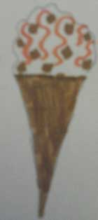

Cool for U Ice Creams was established by the Carroll family in Newcastle West,Co.Limerick who aimed to create some of the tastiest ice-creams not just in Munster but in Ireland as well.
At first, we planned on opening our first stores in Broadford and Dromcollogher. But, we decided on setting up our business in the illustrious town of Tralee due to the presence of many well-known companies in the town over the past decade. This has allowed us to become more recognisable across the region due to the presence of many customers heading to our parlour to try out our original flavours.
Our ice-creams are made using the most modern technology to produce these ice-creams efficiently and quickly. However, we stil use the traditional way of making ice-cream by gathering fresh milk from the cows, cream, eggs and sugar to develop scrumptious custard that contains real and organic ingredients. We try our very best to use everything we can for the production of ice-cream and we hope that our customers will be satisfied with our products.
We can assure you that you will leave the parlour satisfied by our delicate desserts as we have some of the best produce available in the countryside that is second to none. Enjoy your time at the parlour and give us a shout out when you're eating in our parlours.
Ice-creams are COOL 4 U. Your tastebuds will be frozen with joy.